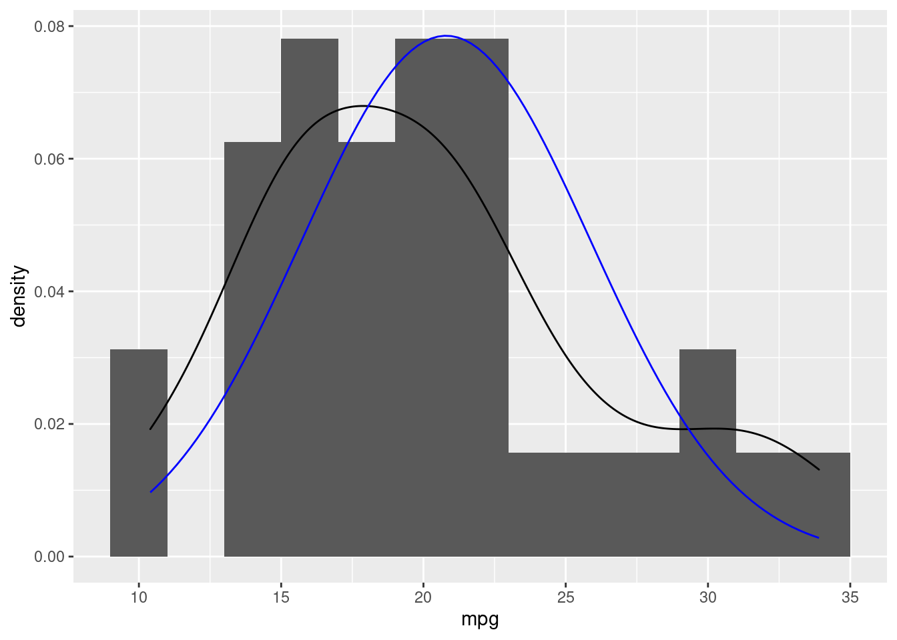

library(tidyverse)
library(janitor)
library(nortest)
# library(gt)
library(DataExplorer)
# library(plotly)
# library(kableExtra)
library(ggrepel)
library (plotly)
# library(factoextra)Regressão Linear
Base de Dados
# Selecionar variáveis quantitativas
df <- mtcars |>
rownames_to_column(var = "name")Variável dependente
# Teste de normalidade Shapiro-Francia
# p-valor <= 0.5 é não-normal, ou seja, maior a variável é normal
sf.test(df$mpg)
Shapiro-Francia normality test
data: df$mpg
W = 0.95247, p-value = 0.1495Visualizando a variável dependente:
df |>
ggplot(aes(x=mpg)) +
geom_histogram(binwidth = 2)
Regressão univariada
# Variável explicativa escolhida = hp
cor(df$mpg, df$hp)[1] -0.7761684DataExplorer::plot_correlation(df[c("mpg", "hp")])
Correlação alta (0.78) e negativa (-).
Visualizando as variáveis:
df |>
ggplot(aes(x = hp, y= mpg)) +
geom_point() +
geom_text_repel(aes(label = name), size = 2, color = "darkgray")Ajustando o modelo linear:
\hat{y} = \alpha + \beta \* x1
#Função lm para obter os coeficientes alpha e beta
modelo_uni <- lm(mpg ~ hp, data = df)
modelo_uni
Call:
lm(formula = mpg ~ hp, data = df)
Coefficients:
(Intercept) hp
30.09886 -0.06823 Neste caso, nosssa função ficaria:
\hat{y} = (30.09886) + [(-0.06823) * x1]
ou seja, se quisermos prever o consumo (mpg) à partir apenas da variável explicativa potencia (hp), faríamos:
(30.09886) + [(-0.06823) * hp]
Por exemplo, de acordo com nosso modelo, para um veículo com 190 de potência, teremos:
(30.09886) + [(-0.06823) * 190] (30.09886) - 12.9637 = \textbf{17.13516}
Ou seja, nosso modelo prevê um consumo de 17.13 milhas por galão se um veículo tiver 190 de potência.
Visualizando:
df |>
ggplot(aes(x = hp, y= mpg)) +
geom_point() +
geom_text_repel(aes(label = name), size = 2, color = "darkgray")+
geom_point(aes(x = 190, y = 17.13),color = "red", size = 3)
Usando a função predict().
Podemos utilizar a função predict para obter inferências do modelo criado ao invés do cálculo manual como fizemos anteriormente:
df_previsao = tibble("hp" = 190)
predict(modelo_uni, newdata = df_previsao) 1
17.13549 Coeficiente de ajuste do modelo R^2:
#Obtendo o R2
summary(modelo_uni)$r.squared[1] 0.6024373#Validando o R2, extraindo a raiz, deve bater com a correlação anterior.
sqrt(summary(modelo_uni)$r.squared)[1] 0.7761684Regressão multivariada
Adicionando outra variável explicativa (cilindros)
Visualizando as correlações
df |> select(mpg, hp, cyl) |>
DataExplorer::plot_correlation()Visualizando
fig <- plot_ly(df, x = ~hp, y = ~mpg, z = ~cyl, color = ~mpg, colors = c('darkred', 'green'), size = 1) |>
add_markers()
figCriando o modelo (ERRADO)
Este modelo é errado, pois a variável “cyl” é qualitativa. Portanto, suas proporções deveriam ser:
table(df$cyl)
4 6 8
11 7 14 Como na tabela df, ela está como double, a função lm, está tratando seus valores numéricos, ou seja, as diferenças entre 4, 6 e 8.
Rodando o modelo ERRADO!
modelo_multi_errado <- lm(mpg ~ hp + cyl, df)
summary (modelo_multi_errado)
Call:
lm(formula = mpg ~ hp + cyl, data = df)
Residuals:
Min 1Q Median 3Q Max
-4.4948 -2.4901 -0.1828 1.9777 7.2934
Coefficients:
Estimate Std. Error t value Pr(>|t|)
(Intercept) 36.90833 2.19080 16.847 < 2e-16 ***
hp -0.01912 0.01500 -1.275 0.21253
cyl -2.26469 0.57589 -3.933 0.00048 ***
---
Signif. codes: 0 '***' 0.001 '**' 0.01 '*' 0.05 '.' 0.1 ' ' 1
Residual standard error: 3.173 on 29 degrees of freedom
Multiple R-squared: 0.7407, Adjusted R-squared: 0.7228
F-statistic: 41.42 on 2 and 29 DF, p-value: 3.162e-09Veja que ele gera um beta para a variável “cyl”.
Vendo as médias adequadas quando mudamos a variável como qualitativa:
df_cyl_medias <- df |> mutate (cyl = as_factor(cyl)) |>
group_by(cyl) |> summarise(media = mean(mpg))
df_cyl_medias# A tibble: 3 × 2
cyl media
<fct> <dbl>
1 4 26.7
2 6 19.7
3 8 15.1Visualizando o modelo errado (com ponderação arbitrária de 1,2 e 3 e as médias certas (em vermelho):
df |>
ggplot(aes(x=cyl, y=mpg))+
geom_point()+
geom_text_repel(aes(label=name))+
geom_smooth(method="lm", se=F)+
geom_point(data = df_cyl_medias, aes(x=parse_number(levels(cyl)), y=media), color = "red")Criando o modelo (CERTO)
Ajustando a variável de double para factor:
df_fct <- df |> mutate (cyl = as_factor(cyl))Rodando o modelo:
#OBS: Não precisamos montar as dummys de forma manual, pois a função já faz estes procedimento. Ele também já faz o step-wise:
modelo_multi_certo <- lm(mpg ~ hp + cyl, df_fct)
summary (modelo_multi_certo)
Call:
lm(formula = mpg ~ hp + cyl, data = df_fct)
Residuals:
Min 1Q Median 3Q Max
-4.818 -1.959 0.080 1.627 6.812
Coefficients:
Estimate Std. Error t value Pr(>|t|)
(Intercept) 28.65012 1.58779 18.044 < 2e-16 ***
hp -0.02404 0.01541 -1.560 0.12995
cyl6 -5.96766 1.63928 -3.640 0.00109 **
cyl8 -8.52085 2.32607 -3.663 0.00103 **
---
Signif. codes: 0 '***' 0.001 '**' 0.01 '*' 0.05 '.' 0.1 ' ' 1
Residual standard error: 3.146 on 28 degrees of freedom
Multiple R-squared: 0.7539, Adjusted R-squared: 0.7275
F-statistic: 28.59 on 3 and 28 DF, p-value: 1.14e-08Visualizando o modelo certo:
df_fct |>
ggplot(aes(x=cyl, y=mpg))+
geom_point()+
geom_text_repel(aes(label=name))+
geom_line(data = df_cyl_medias, aes(x=cyl, y=media,group =1), size =1.2,color = "blue")+
geom_point(data = df_cyl_medias, aes(x=cyl, y=media), color = "red")Comparando os modelos uni e multi-variado com variável dummy:
summary(modelo_uni)$adj.r.squared[1] 0.5891853summary(modelo_multi_certo)$adj.r.squared[1] 0.7274854Observamos que o R2 ajustado (para comparação de modelos) é bem maior quando dicionamos a variável cyl.
Estimativa final do modelo multivariádo:
df_pred <- tibble(hp = 190, cyl = as_factor(8))
fit <- predict(modelo_multi_certo, df_pred)
df_pred |> mutate (fit = fit)# A tibble: 1 × 3
hp cyl fit
<dbl> <fct> <dbl>
1 190 8 15.6df_fct |>
ggplot(aes(x=cyl, y=mpg))+
geom_point()+
geom_text_repel(aes(label=name))+
geom_point(data = df_pred, aes(x = cyl, y=fit), color = "blue", size = 4)+
geom_label_repel(data = df_pred,
aes(x = cyl, y=fit,
label=paste("Previsto:", "cyl=", cyl, "hp=", hp)),
color = "blue",
size = 4,
nudge_x = 4,
nudge_y = 9)